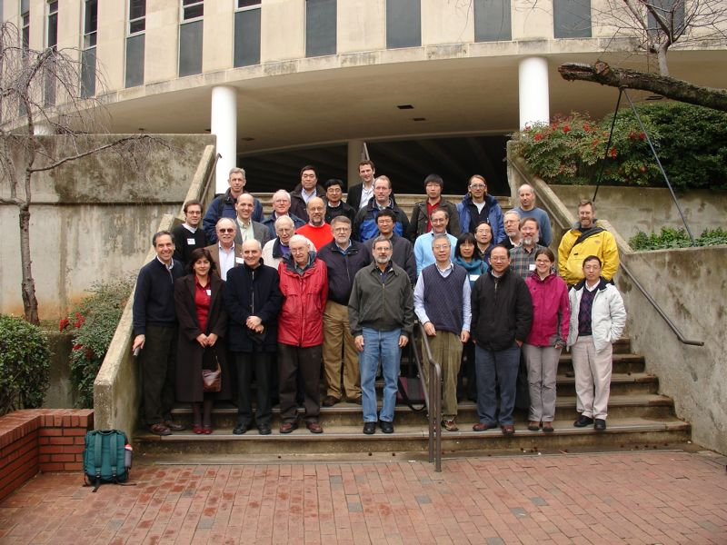

Anna
R.
Ghazaryan
Conference and mini-symposia
organizer/co-organizer:
- Minisymposium on Stability of Traveling Waves, Joint
SIAM/RSME-SCM-SEMA Meeting on Emerging Topics in Dynamical Systems and
Partial Differential Equations Parts I, II, III, and IV, 2010,
Barcelona, Spain
- Mini-symposium Existence,
Uniqueness and Stability of Combustion Wavefronts - Part
I, Part
II, SIAM Conference on Applications of Dynamical Systems,
2007, Snowbird, with Stephen Schecter
|
Photo
of participants of the conference "The
Geometry and
Analysis of
Dynamical Systems,"
NCSU, February 2008

|